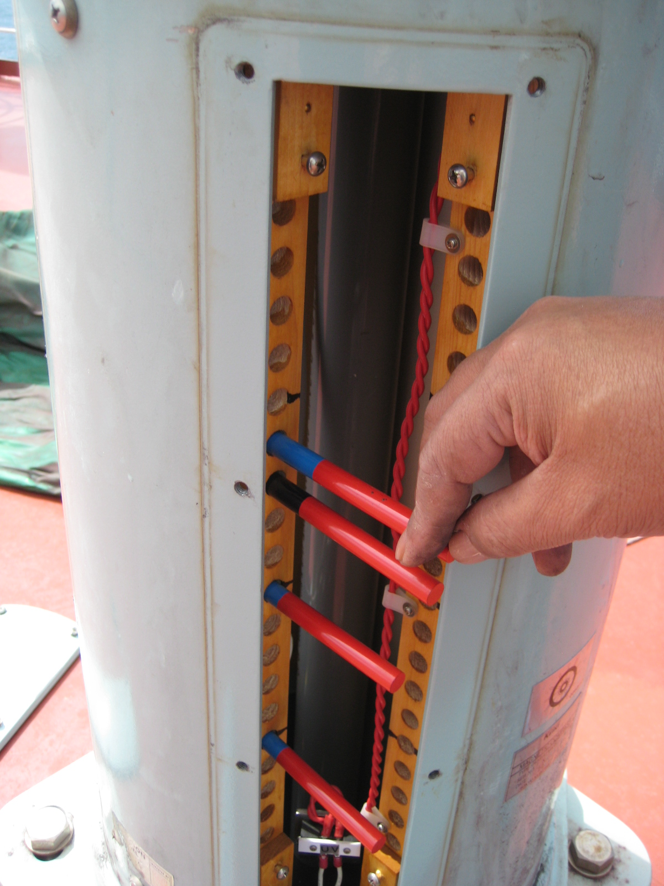
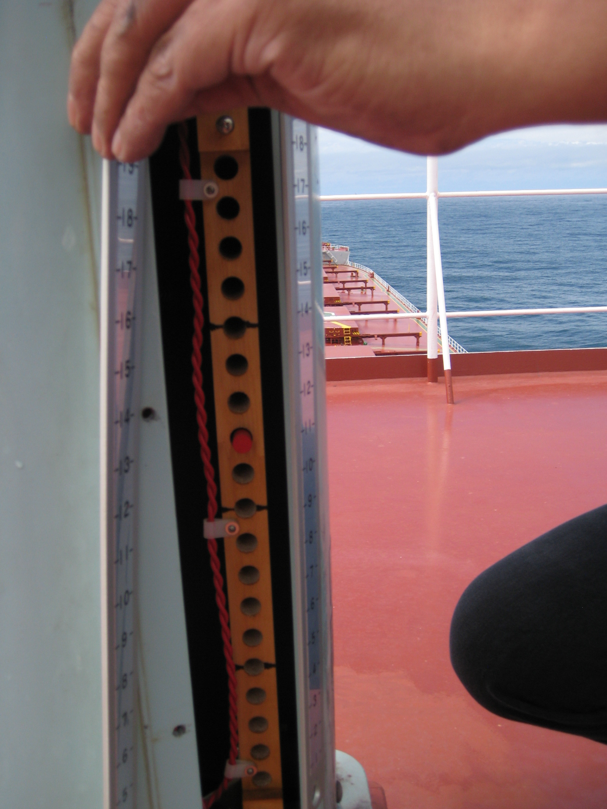
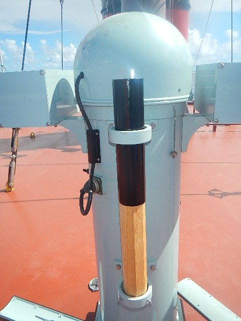

Compass Swinging & Adjustment
Comprehensive swinging procedures conducted by certified adjusters, meticulously neutralizing the magnetic influence of the vessel's hull, equipment, and cargo.
Certified Adjusters
Even in the era of advanced digital navigation, the magnetic compass remains the ultimate, fail-safe directional reference onboard any vessel. Our Magnetic Compass Adjustment and Deviation Card Issuance services ensure this critical instrument operates with absolute precision.
Conducted by certified adjusters, our comprehensive swinging procedures meticulously neutralize the magnetic influence of the vessel's hull, equipment, and cargo. Following the physical adjustment, we issue an accurate, fully updated deviation table, guaranteeing your vessel remains strictly compliant with SOLAS requirements while equipping your bridge team with the reliable baseline they need to navigate safely under any circumstances.
What We Deliver
Comprehensive swinging procedures conducted by certified adjusters, meticulously neutralizing the magnetic influence of the vessel's hull, equipment, and cargo.
An accurate, fully updated deviation table issued after every adjustment — the reliable baseline your bridge team needs to navigate safely under any circumstances.
Adjustment and documentation executed strictly to SOLAS requirements, keeping your vessel's compass certification valid and inspection-ready at all times.
Inspection and correct placement of Flinders bars, quadrantal spheres, and corrector magnets, ensuring the entire compass installation performs as designed.
Our Adjusters at Work


